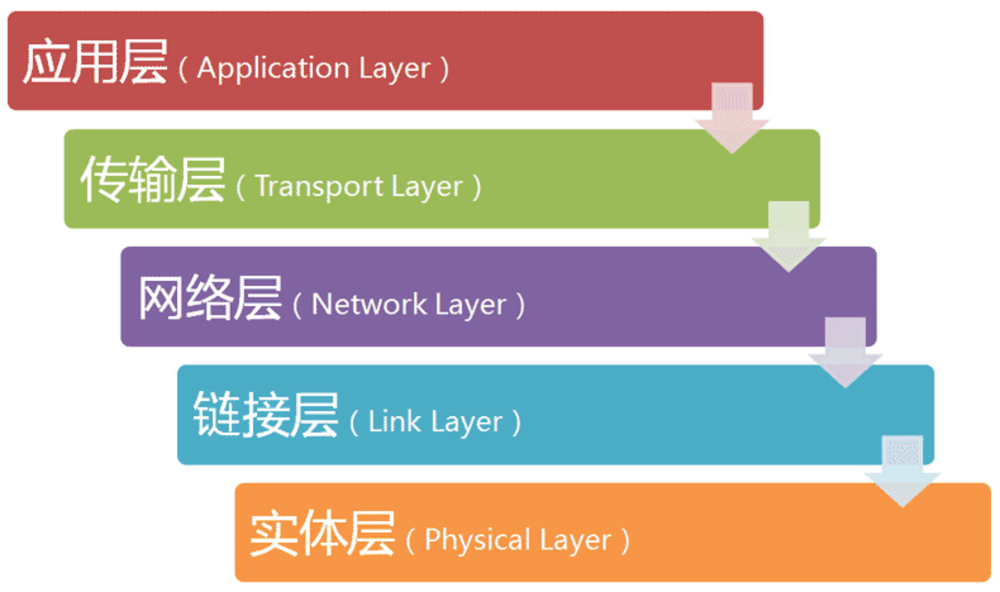
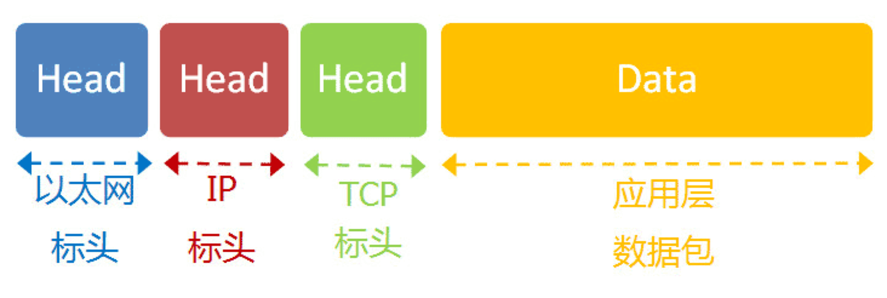
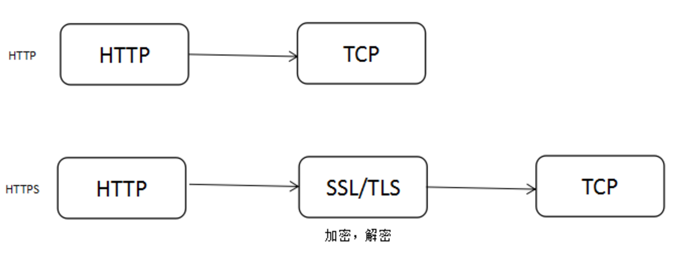
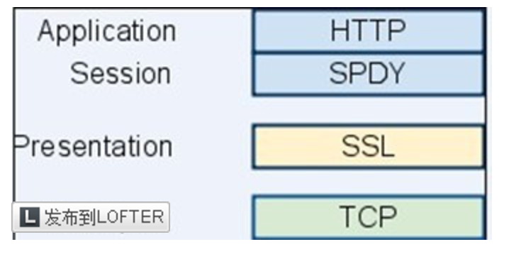
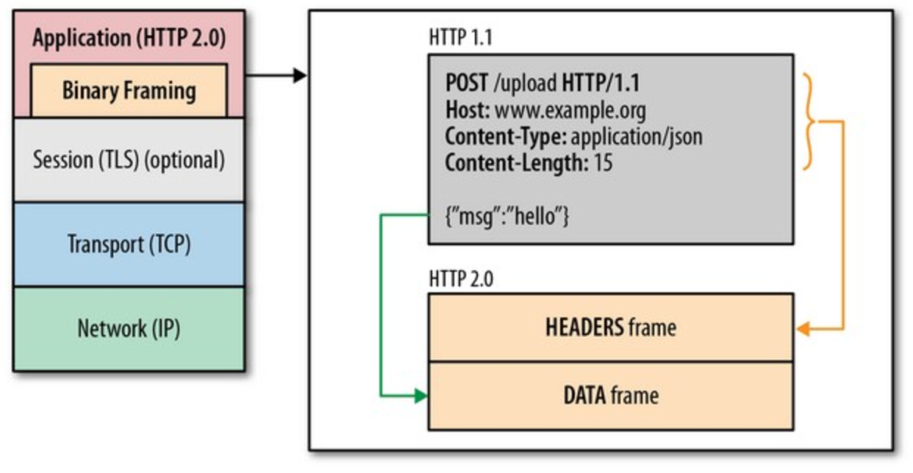
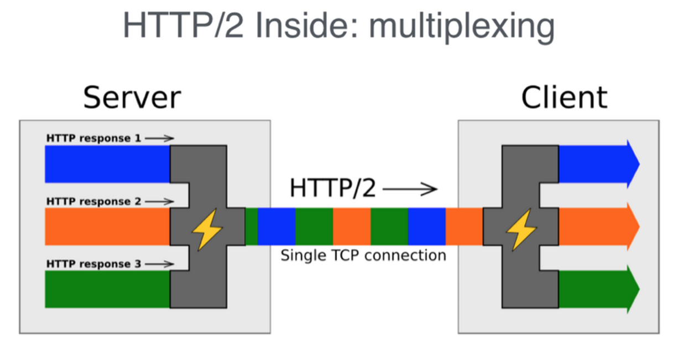

网络基础篇 + HTTP前世今生
2017-06-13 星期二 丁酉年 五月十九
【鸡年】丙午月 辛未日
宜：嫁娶 祭祀 祈福 求嗣 开光
忌：安葬 开生坟 合寿木 行丧
网络层级
七层、四层、五层（理解不同）

每一层都由协议来规范行为：
实体层（物理层）：连接计算机（光纤、电缆线、无线电波、双绞线等）。
链接层（数据链路层）：确定0 1的分组形式。
--以太网协议，一组电信号组成一帧，一帧分为head和data两部分，head中包含接收方MAC地址信息，以广播的方式向本网络内所有计算机发送数据包，由接收方自己比对MAC地址判断是否接收。
网络层：主机到主机的通信。
--互联网由许多子网络组成，在同一子网中可以通过MAC地址以广播形式找到目标，但是不同子网广播不过去，所以需要在网络层引入新的地址用于查找子网络，即网址。
--IP协议，IPV4规定网络地址由32个二进制位组成，以IP地址与子网掩码相加是否相等判断是否位于同一个子网络。IP数据包放入到以太网数据包的data部分，IP数据包同样包含head和data两部分。
--ARP协议，通过IP地址获取MAC地址（不在同一子网交由网关处理），在同一个子网络中广播发出数据包包含目标IP地址，MAC地址为FF:FF:FF:FF:FF:FF目标主机接收到后比对成功后报告自己的MAC地址，于是获取到了MAC地址，可以把数据包发送到子网络里任一主机。
传输层：端口到端口的通信。（端口为每个使用网卡的程序的编号）
--UDP协议，数据包放入到IP数据包的data中，同样由head和data组成，head主要定义发出端口和接收端口，data为具体内容。
--TCP协议，有确认机制的UDP，每个数据包需要确认，过程复杂，消耗更多的资源。
应用层：规定应用程序的数据格式。（DHCP,DNS,HTTP,FTP,SSH等）

用户角度
网络通信是主机间数据包交换，要交换数据需要知道双方的MAC地址和IP地址。
用户可以通过静态IP和动态IP两种方式实现网络通信配置。
--设置本机静态IP、子网掩码从而确定本机所处子网络，设置网关用于跨子网通信，设置DNS服务器地址用于DNS解析。
--利用DHCP协议，以广播形式向DHCP服务器获取动态的IP地址。
实例：访问页面。
--浏览器中输入URL，从本地（浏览器->OS）DNS缓存中获取目标服务器IP地址，本地没有则向DNS服务器请求，获取到IP地址后缓存到本地。
--判断是否为同一子网络，是则数据包应包含本机和目标主机的MAC、IP地址，否则目标主机的MAC地址应改为网关MAC地址。
--组装数据包，如上图。
--建立TCP连接，经历三次握手后在第三次将数据包发送到目标服务器，服务器取出完整的TCP数据包后做处理，定位资源，将资源复本写到TCP套接字做出HTTP响应，然后借由TCP协议再发送回来到客户端。
--客户端收到响应，进行页面处理、展示。
HTTP
HTTP与现代浏览器
HTTP（超文本传输协议）建立之初是为了将部署在服务器上的html文档传送到客户端浏览器，然而随着web的发展，css、js带来的复杂的页面，ajax带来的从服务器的数据获取，移动端的新环境等等，都使得HTTP这一应用层协议不断做出变化。
http://host[":"port][abs_path]
--请求：请求行、消息报头、请求正文（get和post区别）
--响应：状态行、消息报头、响应正文（常见状态码）
--报头：Cache-Control, Authorization, User-Agent, Accept, Server, Location, Content, Last-Modified, Expires...
HTTP优化
带宽和延迟:网络基础建设很大程度上解决了带宽问题，影响HTTP请求的大部分落到了延迟上。
--浏览器阻塞（资源合并减少请求），浏览器的单域名最大连接数限制（域名分区，提高并行下载资源能力）。
--DNS查询。
--建立连接，TCP三次握手。
HTTP1.0--HTTP1.1
--HTTP1.1引入了更多的缓存控制策略（浏览器缓存以后详细整理）。
--HTTP1.1的请求和响应消息都要带上host头域。
--HTTP1.1支持长连接和请求的流水线处理，允许在一个TCP连接上传递多个HTTP请求和响应，默认开启connetction:keep-alive。
--HTTP1.x传输数据时为明文，没有身份验证，无法保证安全。
--HTTP1.x的header内容多大，增加成本，且由于header变化不大，造成资源浪费。
--keep-alive给服务端带来性能压力，例如在文件被请求后保持不必要的连接。
HTTPS

与HTTP区别
--HTTP协议运行在TCP之上，传输内容为明文，HTTPS运行在SSL/TLS之上，SSL/TLS运行在TCP之上，传输内容都经过加密。
--HTTP与HTTPS连接方式不同，端口也不同，80/443。
SSL/TLS协议
--思路：客户端向服务端索要公钥，然后用公钥加密信息，服务器收到密文后用私钥解密。
--实现：将公钥放在数字证书中，保证公钥不被篡改；利用公钥加密session key，用session key对称加密信息，减少加密消耗的时间。
HTTPS改造探究
--证书选择，配置web服务器，代码改造。
--SSL握手带来的降低用户访问速度问题。（SPDY优化）
--加密带来的CPU消耗。（算法优化？）
SPDY

是什么
SPDY是对HTTP的增强，其核心思想是尽量减少连接个数。
SPDY的设计特点是在SSL层的基础上，增加了一个session 层，从而在一个tcp 连接基础上，实现了多并发和交叉流传输。
一个SPDY会话实际上就对应一个TCP连接。
特性
流复用
--允许多个并发HTTP请求共用一个TCP会话，多路复用降低SSL握手、连接数。（多路复用不是共享信道吗？物理层的东西为什么和共享TCP有关系？这个和HTTP1.x的keep-alive有什么区别？虚拟流不太理解？）
请求优先级
--假设理解了多路复用，存在请求优先级的问题，避免阻塞关键请求。
HTTP header压缩
服务器端推送
--通过X-Associated-Content协议头向客户端推送数据。（和websocket之间存在竞争关系？）
强制使用SSL加密传输数据
plus
SPDY已走远，HTTP2.0取而代之
HTTP2.0
初探
与SPDY区别：支持明文HTTP传输；消息头压缩算法与SPDY不同。
性能核心：二进制分帧（把传输的信息分为更小的消息和帧，并采用二进制编码）

HTTP 2.0 通信都在一个连接上完成，这个连接可以承载任意数量的双向数据流。相应地，每个数据流以消息的形式发送，而消息由一或多个帧组成，这些帧可以乱序发送，然后再根据每个帧首部的流标识符重新组装。
首部表始终存在并由服务端和客户端共同更新，无变化则自动使用之前发送的首部，减少开销。
HTTP2.0所有通信在一条TCP连接上完成！
请求优先级、服务端推送
新特性
基于新的二进制格式解析，1.x为基于文本的格式解析
多路复用，连接共享，一个request对应一个id，接收方可以根据request的id将request再归属到各自不同的服务端请求里面
header压缩，通讯双方各自cache一份header fields表
服务端推送


微信打賞

支付寶打賞